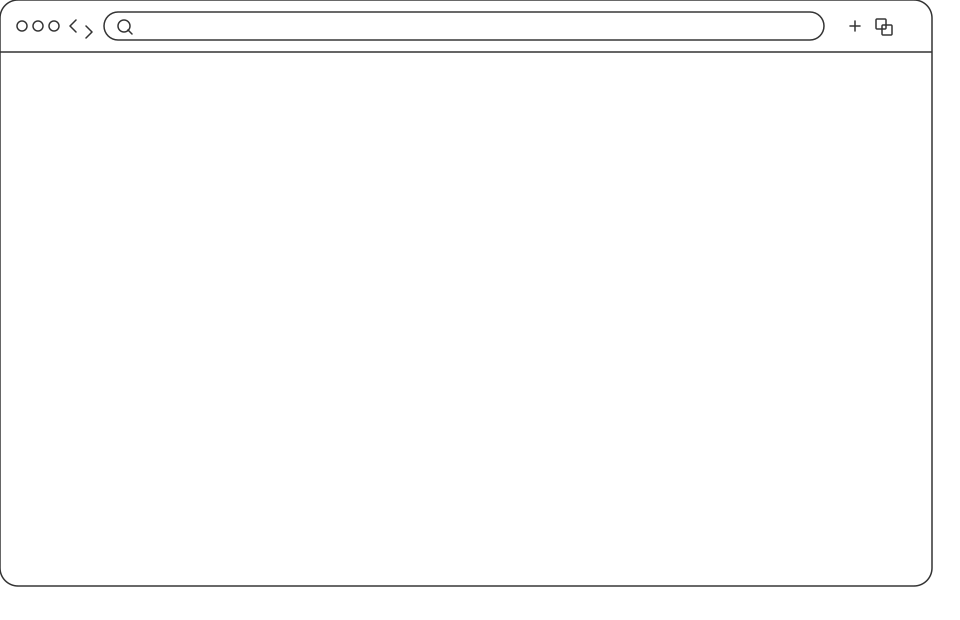

sauna-lore
Tales from the Vital sauna. A documentation project exploring sauna culture and community.
A vanilla javascript project built with p5.js and p5.sound.
open saunalore.com →
Tales from the Vital sauna. A documentation project exploring sauna culture and community.
A vanilla javascript project built with p5.js and p5.sound.
open saunalore.com →